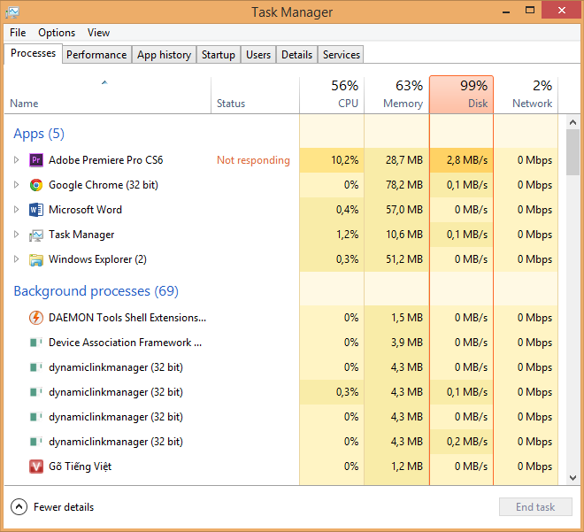

11 thủ thuật giúp bạn khắc phục lỗi Full Disk 100% trên Win 10 (Read 1325 Times)

Full Disk 100% có lẽ không còn xa lạ gì đối với những người dùng Windows 8.1.
Lỗi này không chỉ bị trên Windows 8.1 mà trên cả Windows 7 hay Windows 8 đều gặp lỗi này.
Hôm nay mình sẽ chia sẻ cho các bạn 11 thủ thuật khắc phục.
Lưu ý: Các cách ở dưới chỉ để sửa tạm thời, nếu làm xong vẫn bị thì nên cài lại Windows,
thay ổ đĩa mới,...
1. Set Ram ảo bằng thủ công thay vì để chế độ Automatically:
Để Ram ở chế độ Automatically (tự động) cũng là một trong những nguyên nhân khiến máy tính bạn bị dính lỗi Full Disk . Thay vì để chế độ Auto thì bạn nên Set cứng RAM ảo.Cách thực hiện như ảnh ở dưới:
Tại Tab Virtual Memory, bỏ dấu tick ở Automatically manage paging file size for all drives. Chọn ổ đĩa cài Hệ điều hành của bạn (thường là ổ C). Sau đó tích vào Custom size.
Tại mục Maximum size và Initial size. Bạn set cứng cho Ram ảo bằng 1/2 Ram thật của bạn. Ở đây mình có 4GB Ram nên sẽ Set một nửa là 2GB Ram = 2048MB, tương tự các bạn làm với máy tính của bạn.
Cuối cùng ấn OK để lưu, và khởi động để thay đổi có hiệu lực.
2. Xử lý Troubleshooting
Bạn vào Control Panel, gõ Troubleshooting trên ô tìm kiếm và nhấn vào Troubleshooting.Cửa sổ mới hiện ra, kích đúp chuột vào System and Security.
Cửa sổ mới hiện ra, kích vào System Maintenance.
Nhấn Next.
Sau đó cứ để cho máy nó làm việc khi xuất hiện thông báo System Maintenance như hình thì nhấn vào mục Try troubleshooting as an administrator.
Sau đó ngồi đợi hoặc làm gì thì làm, chờ cho nó chạy đến khi nào có chữ Close thì nhấn vào.
Bá Tĩnh - Sưu Tầm
Cái mục RAM ảo, sao có bài báo họ hướng dẫn set gấp đôi ở mục Maximum size nhỉ?
Cũng không tác dụng mấy @@. Lỗi của Win 10 rồi @@